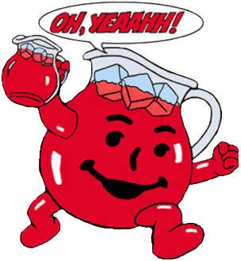
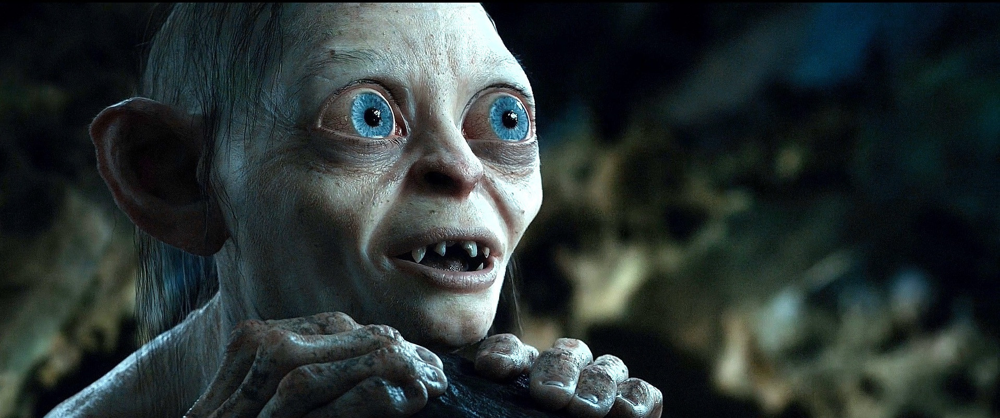

I wish I never bought bitcoin.
Bitcoin incentivizes greed. It robbed me from my childlike curiosity and fascination for science. Bitcoin is the biggest inadvertent pyramid scheme ever and blockchain is snake oil. Take your spam elsewhere.
But first, something completely different. Sometime in 2015 I caught wind of Elon Musk. There was something relatable in the way he spoke about being bullied, education (1), and the future. His demeanor lit a spark that made me realign with myself, resurrecting my usual optimistic outlook. Further still, I became enamored by his companies which reinvigorated my long-lost curiosity and fascination with science. Waking up in the morning became exciting again; similar to my 10-year-old self during the summer: not a care in the world, ready to explore.
Not being able to afford a Tesla car, the only way I could support him was through buying Tesla shares. So that's what I did, at the all-time high, right before it plummeted. In a fit of panic I wanted to sell, but the revolutionary workings of its cars and the Gigafactory, and their abundance of talent reassured me they were vastly ahead of the game. So I kept buying until the graph bottomed out, and soon enough my portfolio turned green. That the stock market closes at night and during the weekends made the whole experience tenable, more relaxed. But not for long.
“Drinking the Kool-Aid”
“is an expression used to refer to a person who believes in a possibly doomed or dangerous idea because of perceived potential high rewards.” (2)
On Reddit I met a fellow Tesla fan who said his two most profitable investments were Tesla and bitcoin. Initially I didn't bother, but some three months later it reappeared. My motivations for investing had begun to shift. Primarily supporting a cause and secondarily making some money—beating inflation—traded places. Profit took precedence.
At a price of $1200 and rising I drank the decentralized Kool-Aid. Each day I woke up richer—on paper. The gains that took Tesla several months happened overnight, and owning a million dollars grew less and less farfetched. “This is not a bubble. This time is different. We're at the start of the adoption curve.” Man, it felt good! In my naivety I dreamt about buying a house, or building a skate park named after bitcoin. I was high on “hopium” and living in a fantasy world. Gradually my time spent learning, reading, or developing actually useful skills decreased. Being rich became the ultimate goal and I merely had to sit back and watch—and here's the kicker—tell everyone about it. This is where the inadvertent pyramid scheme comes in.
By asking friends if they knew about digital currencies I honestly wanted them to reap the profits as well. But I was completely unaware that this behavior resembles a pyramid scheme; a scheme that only nets you a profit when other people buy in after you, at a higher price; also known as the greater fool theory (3). Unlike owning regular company stocks, which pays dividends even if you are the last one to buy. So, what do you do to get this to work? You tell everyone. You become a sneaky salesman. A snake oil salesman. Exactly what happens during a bitcoin hype. Suddenly everyone who's holding start evangelizing. No level-headed discussion about its boons and shortcomings. No. What you see is: “Buy bitcoin because it will revolutionize everything!”, “That's not a downside, it's a feature!”, or, often shouted toward the skeptics: “Have fun staying poor!”. Then the bubble popped, “Kansas went bye-bye”.
“If only I had done this or that” was my prevailing mode of thought, “I could've had so much more!” Although I never day traded, I did diversify, no, gamble into a handful of alternative coins in order to try my luck catching the next 400% price pump. No dice. I wasted so much time waiting for it “to moon” or trying to “catch falling knives” (4). Not only were the results as succesful as dart throwing chimps (5), it also significantly increased my anxiety. The regular stock market seldom impacted my day-to-day emotions, but the 24/7 cryptocurrency market did—more than I consciously realize or care to admit. At one point I had my intestines checked because my doctor feared cancer. Fortunately it was a false alarm, and the symptoms caused by a mild inflammation subsided when I stopped stress eating junk food. If only I listened to my body and did a U-turn at this point. Sadly, greed had taken over; I wanted to procure the same amount of profit as if I had never diversified.
While the bear market was still in play I finished reading The Bitcoin Standard, the most revered book on bitcoin, promoting it as the best currency we've ever had. Still oblivious about its toxic community, and neglecting some of the book's historical inaccuracies, I assumed the content was credible and genuine since the author was a professor in economics. Moreover, after sending him a list of typos and errors he returned the favor by giving me access to his paywalled pdf files. To be able to help such an esteemed professor made me feel elated. I was ready to go all in, and I did. Selling my remaining Tesla shares at $290 at a loss to buy bitcoin at the bottom simultaneously marked my own rock-bottom, for I was dabbing in evil. Even though I was extremely lucky by having caught a falling knife an inch from the floor, I started rooting for a decline in the former and a surge in the latter. Imagine my saltiness when Tesla suddenly shot up to just shy of $1000. Bitcoin had risen as well, but it wasn't good enough. Dumbass.
“My precious!”
“He hated the dark, and he hated light more: he hated everything, and the Ring most of all.”
“What do you mean?” said Frodo. “Surely the Ring was his Precious and the only thing he cared for? But if he hated it, why didn't he get rid of it, or go away and leave it?”
“You ought to begin to understand, Frodo, after all you have heard,” said Gandalf. “He hated it and loved it, as he hated and loved himself. He could not get rid of it. He had no will left in the matter.” —“The Lord of the Rings” by J.R.R. Tolkien
Slowly I became like Gollum. Which is ironic because I love The Lord of the Rings for the exact opposite reasons: calling for adventure, exploration, to love your friends, and to live in harmony with nature. Instead I fell in love with “my precious”, sitting at home watching numbers, albeit in the comfort of a picturesque wallpaper. Bitcoin made me as selfish and greedy as the bankers it was supposed to be against.
If not for skateboarding I wouldn't have stayed sane. It pulled me out of isolation and held my soul intact despite being otherwise bereft of life. Bitcoin's one redeeming quality, because it temporarily made me feel rich, was that I learned to spend more generously on things that merited it, like skateboarding or lichess.org (6). Whereas before I tried saving on nearly everything.
Fast-forward to some months before Covid-19. Something smelled fishy. Bitcoin's price had been rising, which was exciting, but some doubts arose about the aforementioned professor: Saifedean Ammous. I stumbled upon his Twitter profile… “What the fuck.” The amount of conspiratorial nonsense mixed with academically dishonest douchebaggery was flabbergasting. “Is this guy really a professor?” I gave him the benefit of the doubt until I emailed him regarding meat, a topic he regularly rants about. The full convo is available in the appendix, but here's a taste:
“I need an echo chamber because the world is FULL of brainwashed malnourished clueless nuts like you”
I'm not proud of my conversation with him, but the way he talked like a neglected pubescent brat taught me to assume good intentions yet scrutinize everyone; even if they have a PhD to their name. “Saifegate” severely shook my confidence: “If this guy wrote the most popular book on bitcoin, then what the fuck does the rest of its community consist of?”
Bitcoin is dead inside.
From then on toxic bitcoin maximalists (and crypto currency nuts) appeared everywhere. Remember that “fishy smell” from before? It turned into dogshit. What bitcoin stood for had transitioned the way I had. It wasn't about changing the world anymore, but about increasing one's own wallet. My disregard culminated at the sight of the following series of events:
“Just BTFD #bitcoin” —Adam Back
“Btw it was what I did this morning "Just BTFD #bitcoin " ie "Just Bought TFD". I had seen DMs about buying on waking up and looking at price, then saw news @coinbase crashed (yet again), and bought some at $8600.” —Adam Back; source
If a CEO that feels the need to encourage people into buying a product he has vested interests in isn't a red flag, then I don't know what is; products should speak for themselves. The possibility of him being Satoshi Nakamoto didn't help either:
—YouTube: “Bitcoin - Unmasking Satoshi Nakamoto” by Barely SociableBut wait, it doesn't end there. Here's Luke Dashjr, a Bitcoin Core developer who helps build the software running on thousands of computers.
“Masturbation is a very grave sin, arguably even worse than murder.” —Luke Dashjr; source.
“I don't have a dog, but I would totally try one and eat it if it tastes decent. Had a cat once. Planned to eat it, but something else got to it first. Currently have a pair of male & female bunny. Plan to eat some of the babies, but… we're failing to get them to breed.” —Luke Dashjr; source.
“You have it backwards. Guns protect life. And no, animals have no rights. They also exist specifically for human consumption.” —Luke Dashjr; source.
Completely nuts. Sure, someone's religion doesn't necessarily prevent them building decent things. But if one is capable of such fallacious reasoning and fully supporting barbaric practices, then they're capable of implementing some iffy stuff in whatever they do. Here he justifies slavery and geocentrism: https://www.reddit.com/r/Buttcoin/comments/4936kw/lukejr_is_a_seriously_a_super_crazy_person_quotes.
To consider I once thought the crypto scene was a bit crazy because of this ridiculous performance during an Ethereum convention (another crypto currency); boy, did I have another thing coming…
—YouTube: “EDCON 2019 - Vitalik and Ethereum Foundation dance and rap”I want to stop writing about this soulless topic so bad, but I'm not done yet. People need to know what they're getting into. A purely speculative uninspirational asset, that's what.
Speculation has become bitcoin's main purpose, but without the capability for large-scale transactions *. Unlike our day-to-day currencies, which are used for both. Earning money by trading money is a worthless “skill”. Doing so produces nothing of real value to society and the same goes for day trading stocks. This is aptly communicated by Matthew McConaughey in The Wolf of Wallstreet:
“Number one rule of Wallstreet. […] Nobody knows if a stock is gonna go up, down, sideways or in fucking circles. Least of all, stockbrokers, right? It's all a fugazi. […] It's fairy dust. It doesn't exist. It's never landed. It is no matter. It's not on the elemental chart. […] It's not fucking real […] right? We don't create shit. We don't build anything. So if you got a client who bought stock at eight, and now it sits at sixteen, and he's all fucking happy and he wants to cash in, liquidate, take his fucking money and run home. You don't let him do that, 'cause that would make it real! No. What do you do? You get another brilliant idea, a special idea, another 'situation', another stock to reinvest his earnings and then some. And he will, every single time, because they're fucking addicted. And then you just keep doing this. Again and again and again. Meanwhile he thinks he's getting shit rich, 'cause he is, on paper, but you and me, the brokers, we're taking home cold hard cash via commision motherfucker!” <cute peep sound>
YouTube: “The Wolf of Wall Street” fugazi scene (quote at 3:56)Not only did I contribute jack to society by buying bitcoin, my illusory future riches made me think that I'd never have to work again. A lousy mindset no matter what. Now I'd rather share the pain with others than be miserable and alone in an ivory tower. But don't get me wrong, my beef with our work obsessed and consumerist societies remains; I definitely never want a job I hate going to anymore. However, if one escapes the miserable rat race, the right thing to do is to help build a world you want to live in, not merely escape the one you don't.
Also, let's say by chance my riches did come to fruition, without knowhow and people who want to support me I would not be able to accomplish anything. This is a major flaw in how many bitcoiners imagine post-apocalyptic scenarios. They assume that when the USD and society collapses they'll be able to do and buy anything because bitcoin survived hyperinflation. It might resist inflation, but it'll be futile if the populace turns against them, or bitcoin. True loyalty is not for sale. Leaving aside all the other likely systemic effects that could render technology unwanted or impossible to use, what are these rich folk going to survive on… technical analysis? Sure, it's possible to stock up on a decade's supply of foodstuff, but is posting Vegeta memes going to fix that leaking water pipe? No. “Hodling” (7) isn't a skill, it's a lack thereof. Granted, I'm generalizing here. There are wealthy skilled people who hold bitcoin as well, such as Tony Hawk or Jack Dorsey, but they became wealthy because of their skills, and not because of speculation. What I'm getting at is that we're all interdependent. The elite need the working class more than the workers need the elite, yet on average they're both unaware of it.
 —Image: “Thailand” by Tawan Chuntra
—Image: “Thailand” by Tawan Chuntra
Suddenly a wild coronavirus appeared. It used pandemic, and it was super effective: the markets crashed. When the lock-down was in full effect it dawned on me: bitcoin is indeed utterly useless when things go haywire. What's the point of wealth if you can't do anything with it, won't do anything with it, or have no one to share it with. Have you noticed some of these rich celebrities feeling sorry for themselves on social media for being stuck in their big ass mansions? That's what I mean. “But lock-downs or apocalyptic scenarios are the exception not the rule. Being wealthy when things are normal is nice.” Yes, but that's not what I'm arguing. I'm rebuking the idea that bitcoin will win the battle it was designed to win—greed induced financial fraud (8)—especially when the means to beat it incentivizes greed just as much. Perhaps even more so since it is deflationary, and because fractional reserve banking on bitcoin already happens (9)… the irony.
Rolling in dough has many advantages, but it clearly introduces a whole other set of psychological problems. I read a book about young Stalin before he went insane (10). And another about the misgivings of Hollywood and celebrity status (11). It gave me a glimpse of how absolute power or fame can gradually change a person, yet I never imagined it could happen to me. “I'd be a generous millionaire. I'd be a virtuous leader.” Instead, even at trivial amounts of money in comparison, I still succumbed to the same vices. Imagine being stuck on an endless trail scattered with $100 bills, and each day the bills increased. When would you say “I have enough”?
Conclusion.
Invest in yourself and others you believe in. A financial instrument that brings out the worst in people—greed—won't change the world for the better.
“Being greedy for money is the surest way not to get it, but when one serves for the sake of service—for the satisfaction of doing that which one believes to be right—then money abundantly takes care of itself.” —Henry Ford
“If money is your hope for independence you will never have it. The only real security that a man will have in this world is a reserve of knowledge, experience, and ability.” —Henry Ford
“For the love of money is the root of all evil.” —Timothy 6:10
Footnotes.
* Even when taking the Lightning Network into account, which is technically impressive, but seems inherently redundant as one has to do an on-chain transaction to open and close a channel. E.g., if someone without bitcoin wanted to accept, say, his monthly $1500 wage in bitcoin on the Lightning Network, he's obligated to first buy $1500 worth of Bitcoin himself, open up a Lightning channel worth $1500 in bitcoin, then transfer this $1500 worth of bitcoin somewhere else in order to empty the channel so it can receive $1500 of bitcoin. Fantastic.
Sources.
- Elon Musk - CEO of Tesla Motors and SpaceX | Entrepreneurship | Khan Academy: https://www.youtube.com/watch?v=vDwzmJpI4io
- https://en.wikipedia.org/wiki/Drinking_the_Kool-Aid
- https://en.wikipedia.org/wiki/Greater_fool_theory
- https://www.thebalance.com/what-does-catching-a-falling-knife-mean-1344945
- https://investingcaffeine.com/2012/07/08/experts-vs-dart-throwing-chimps
- Lichess is the best chess website on the Web; all features being completely free, refusing the use of ads and trackers.
- https://en.wikipedia.org/wiki/Hodl
- https://en.wikipedia.org/wiki/Bitcoin#Creation
- https://en.bitcoin.it/wiki/Fractional_Reserve_Banking_and_Bitcoin
- https://www.goodreads.com/book/show/826564.Young_Stalin
- https://www.goodreads.com/book/show/1039787.Hollywood_Causes_Cancer
Supplementary.
- For the Love of Money – Sam Polk: https://www.nytimes.com/2014/01/19/opinion/sunday/for-the-love-of-money.html
- The Pitchforks Are Coming… For Us Plutocrats – Nick Hanauer: https://www.politico.com/magazine/story/2014/06/the-pitchforks-are-coming-for-us-plutocrats-108014
- The Bit Short: Inside Crypto’s Doomsday Machine: https://crypto-anonymous-2021.medium.com/the-bit-short-inside-cryptos-doomsday-machine-f8dcf78a64d3
- Bitcoin is a Ponzi – Jorge Stolfi: https://www.ic.unicamp.br/~stolfi/bitcoin/2020-12-31-bitcoin-ponzi.html
- Isaac Newton and the perils of the financial South Sea [bubble] – Andrew Odlyzko: https://physicstoday.scitation.org/doi/10.1063/PT.3.4521
Appendix: “Saifegate”
Me:
Hello Saifedean.
As I've sent you typos and other grammar corrections for the Bitcoin Standard—and recommend the book to everyone remotely interested, and even mentioned it in an article I wrote […]—I want to assure you this email does not come with bad intentions.
I have some trouble with the following opinion: https://twitter.com/saifedean/status/1177986778092974086
Can't the same argument be said by animal friendly eaters? Because meat is a billion dollar industry as well…
Meat eaters: “Corporate junk media is not concerned about animal welfare, climate, or your health. All their stupid reasons for why you need to eat plant protein & insects are PR straight from agroindustrial sludge manufacturers.”
Plant eaters: “Corporate junk media is not concerned about animal welfare, climate, or your health. All their stupid reasons for why you need to eat meat protein are PR straight from industrial meat manufacturers.”
Personally, I can't find a way to justify the absurd amount of animal suffering to keep this mass production going. Also, the statement that vegans kill more animals because of death by monoculture seems dishonest; e.g. livestock consume plant protein as well.
https://news.cornell.edu/stories/1997/08/us-could-feed-800-million-people-grain-livestock-eat; http://www.animalvisuals.org/projects/data/1mc?/data/1mc; https://www.vox.com/2014/8/21/6053187/cropland-map-food-fuel-animal-feed
There [is] so much divisive, opposing, biased data out there, on any subject, by all sides, that it's difficult to know what to think anymore. It's impossible for everyone to be specialists in everything, that's why we refer to people with proper credentials. You are a proper source for Bitcoin and economics—for which I thank you by opening my eyes to libertarianism and the Austrian School—but do you agree you are not an expert on medical and environmental issues related to nutrition unless you have the credentials to back it up? Not all scientists have been bought. Not all university degrees are useless; for example there's no way to work in CERN or perform brain surgery without years of training and the proper degrees.
“As long as Man continues to be the ruthless destroyer of lower living beings, he will never know health or peace. For as long as men massacre animals, they will kill each other. Indeed, he who sows the seed of murder and pain cannot reap joy and love.” ―Pythagoras
“My refusing to eat flesh occasioned an inconveniency, and I was frequently chided for my singularity, but, with this lighter repast, I made the greater progress, for greater clearness of head and quicker comprehension. Flesh eating is unprovoked murder.” ―Benjamin Franklin
All that being said, I do not think eating meat is inherently bad, but the 'Auschwitzian' methods necessary for mass production on a global scale are. I'm not here to try and convince [you] to change your eating habits, that never works, but to lay rest to some needless discord which is unhelpful to both sides and originates from both sides. I assume we're both after the same thing, reduce suffering and improve life. Have a good day.
Sincerely,
Angelino Desmet
Saifedean:
There is no diet that causes as much suffering to animals as the vegan/vegetarian diets cause the poor humans who try them.
I find the idea that we need to let our bodies suffer illness and death in order to let animals live to be silly. Animals can't live forever anyway, and they have no sense of self. The silly vegan propaganda about the horrible conditions for animals is massively overblown. It generalizes from the worst practices. But even in the worst practices, animals still live much better lives than animals in the wild, who are constantly getting mauled and eaten by predators.
The idea that animal farming is destructive of the environment is silly, and only believed by people who have no idea about farming and how it works. The idea that animals eat crops that are harmful is even sillier, since these animals are only fed the leftovers of these disgusting crops. The bulk of these crops goes to malnourish and mentally incapacitate the human cattle who eat it. Eating it allows these people to believe the retarded propaganda that the junk food manufacturers put on their TVs.
Also, ask yourself which industrial foods have high margins? It's the junk where all the serious money is made. Not the meat.
“but do you agree you are not an expert on medical and environmental issues related to nutrition unless you have the credentials to back it up?”
I think your deference to expertise is silly. But I find it even sillier when you are wasting my time with your email and asking for my opinion AND then telling me my expertise doesn't matter. Why do you need my opinion if you want to get the opinion of experts? Please keep listening to the morons on your TV who want to feed you industrial junk and let me focus on my own work.
Me:
Saifedean: “There is no diet that causes as much suffering to animals as the vegan/vegetarian diets cause the poor humans who try them.”
That's a debunked myth. All food is part of a cycle that causes other living beings to die, both vegan and omnivorous, of which mass breeding of animals produces the most direct unnecessary suffering/torture for prolonged periods of time.
Saifedean: “I find the idea that we need to let our bodies suffer illness and death in order to let animals live to be silly. Animals can't live forever anyway, and they have no sense of self.”
Even if they don't have a sense of self—which many do—they still feel pain. You can't live forever as well, does that mean I can treat you as we treat animals? Moreover, more people die from eating too much (of anything, including meat) than of too little. Ever been to the USA? People don't get fat or get their arteries clogged by eating vegan. Just compare nutritional deficiencies compared to cardiovascular diseases below. I don't get why you resort to lies.
https://en.wikipedia.org/wiki/List_of_causes_of_death_by_rate;
https://en.wikipedia.org/wiki/Cardiovascular_disease#Diet

Saifedean: “But even in the worst practices, animals still live much better lives than animals in the wild, who are constantly getting mauled and eaten by predators.”
False. What's worse, living in Auschwitz style conditions for a year or more, or getting killed by a pack of lions in ~10 minutes?
Saifedean: “The idea that animal farming is destructive of the environment is silly, and only believed by people who have no idea about farming and how it works. The idea that animals eat crops that are harmful is even sillier, since these animals are only fed the leftovers of these disgusting crops. The bulk of these crops goes to malnourish and mentally incapacitate the human cattle who eat it. Eating it allows these people to believe the retarded propaganda that the junk food manufacturers put on their TVs.”
Source?
Saifedean: “Also, ask yourself which industrial foods have high margins? It's the junk where all the serious money is made. Not the meat.”
What junk? You never eat fruit, nuts, wheat, or vegetables? Omnivores eat everything vegans do, and I'm not talking about the so called “sludge” that's totally unnecessary.
Saifedean: ““but do you agree you are not an expert on medical and environmental issues related to nutrition unless you have the credentials to back it up?”
I think your deference to expertise is silly. But I find it even sillier when you are wasting my time with your email and asking for my opinion AND then telling me my expertise doesn't matter. Why do you need my opinion if you want to get the opinion of experts? Please keep listening to the morons on your TV who want to feed you industrial junk and let me focus on my own work.”
I don't watch TV. That's why I was able to focus on your work and correct your errors. I don't need your opinion on anything besides Austrian economics. It was a polite way of saying that the credibility of your work would increase if you refrain from spreading misinformation about nutrition and the climate. If you played your cards right you would see that Bitcoin fixes climate problems despite its energy consumption. But instead you're blocking everyone that disagrees with you, locking yourself in an echo chamber in which no new knowledge can enter. There are as much crazy, ignorant, bigoted, and brainwashed vegans as there are carnivores or any other self-righteous group. The scientific method is the only way—the ability to admit mistakes and build upon them.
“The planet is fine. The people are fucked.” ―George Carlin
“Humans—who enslave, castrate, experiment on, and fillet other animals—have had an understandable penchant for pretending animals do not feel pain. A sharp distinction between humans and 'animals' is essential if we are to bend them to our will, make them work for us, wear them, eat them—without any disquieting tinges of guilt or regret. It is unseemly of us, who often behave so unfeelingly toward other animals, to contend that only humans can suffer. The behavior of other animals renders such pretensions specious. They are just too much like us.”—Carl Sagan
Sincerely,
Angelino
Saifedean:
I need an echo chamber because the world is FULL of brainwashed malnourished clueless nuts like you who want to pretend to be polite and respectful while telling me what I can or cannot say. Mass media creates armies of zombies like you who are going out there repeating bullshit to try to stop anyone who can think independently from saying anything bad for junk food sales.
I don't know you, and I didn't ask for your opinion. You on the other hand, being an insecure malnourished and brainwashed simpleton, cannot live in a world knowing that someone you respect disagrees with you, and therefore you spam me with the retarded propaganda of junk food producers and expect me to listen like you're my teacher. Eat whatever the fuck you like, I don't care. But spam me with your stupid garbage and I will tell you what I think and then block you.
Blocked, bye!
His trademark “Blocked, bye!” was swiftly followed by another response.
Saifedean:
I also just want to tell you ojne thing:
If you actually beleive meat causes cardiovascular disease, you are A COMPLETE FUCKING IDIOT.
You need to learn to think and read.
Me:
It's funny, you ask people not to resort to ad hominems while resorting to ad hominems yourself whenever inconvenient information comes your way. You can never be wrong in your world; the epitome of insecurity. I don't feel threatened in the slightest.
PS I never claimed eating meat causes cardiovascular diseases; science, however: https://www.ncbi.nlm.nih.gov/pmc/articles/PMC3483430. Anyway, meat is not bad, mass production is.
PPS If you'd challenge me at a sport we'd see who's malnourished. I climb, I skateboard, I lift weights, and I run. What's your specialty… juvenile insult hurling?